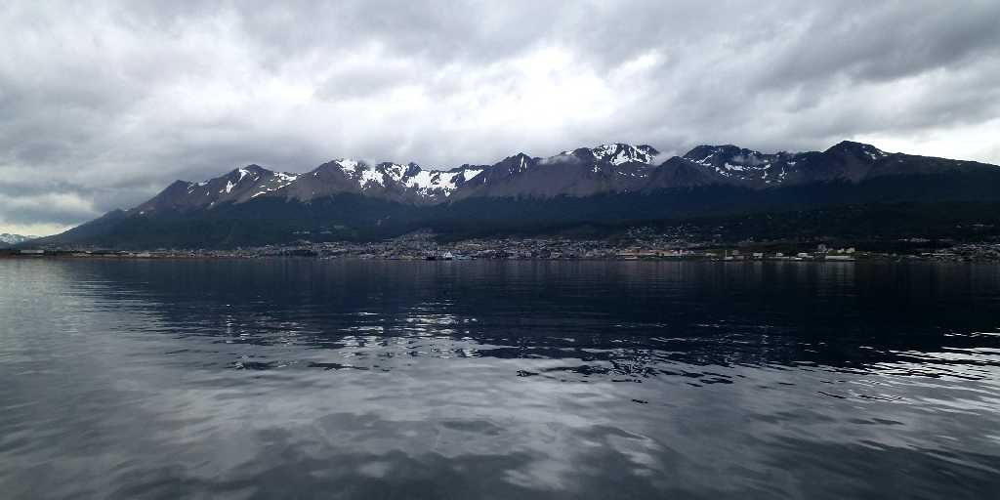
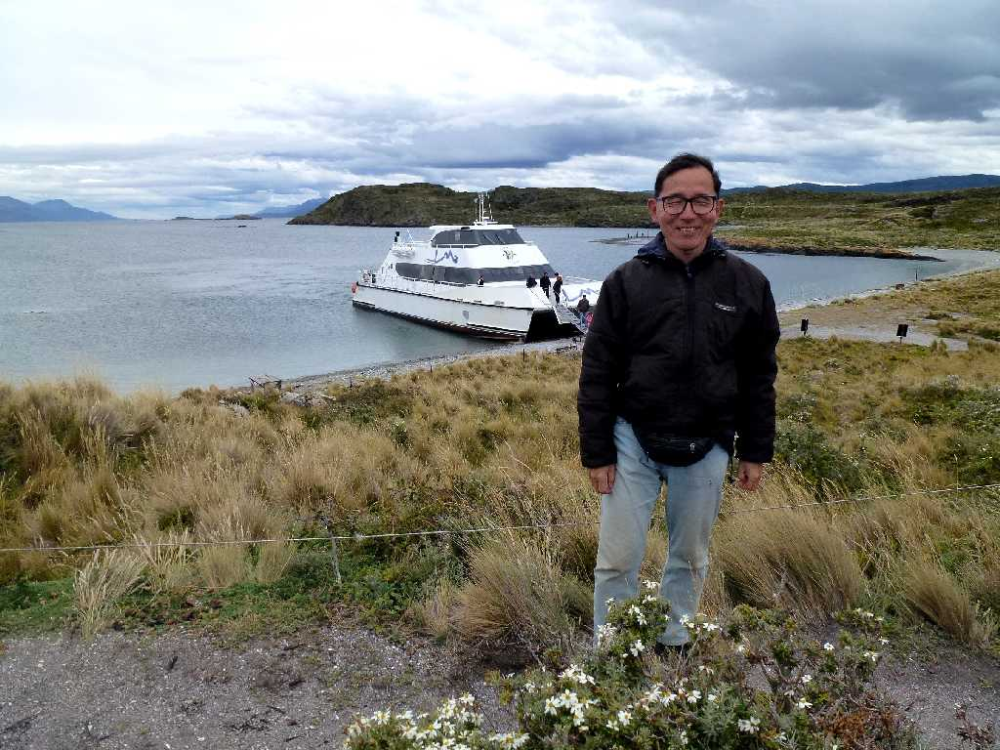
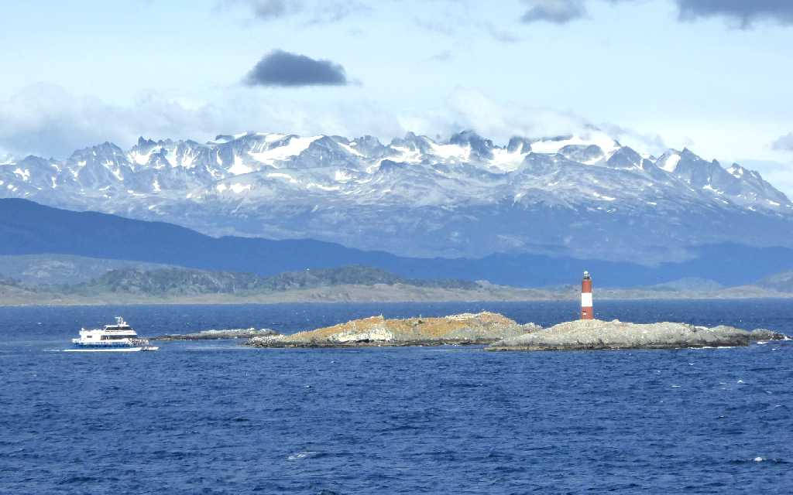
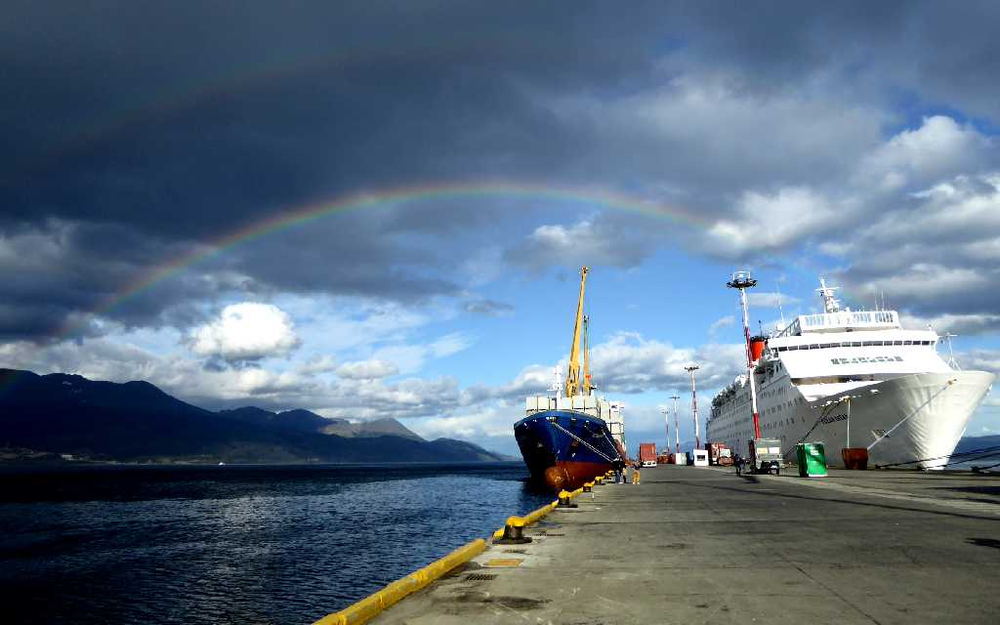
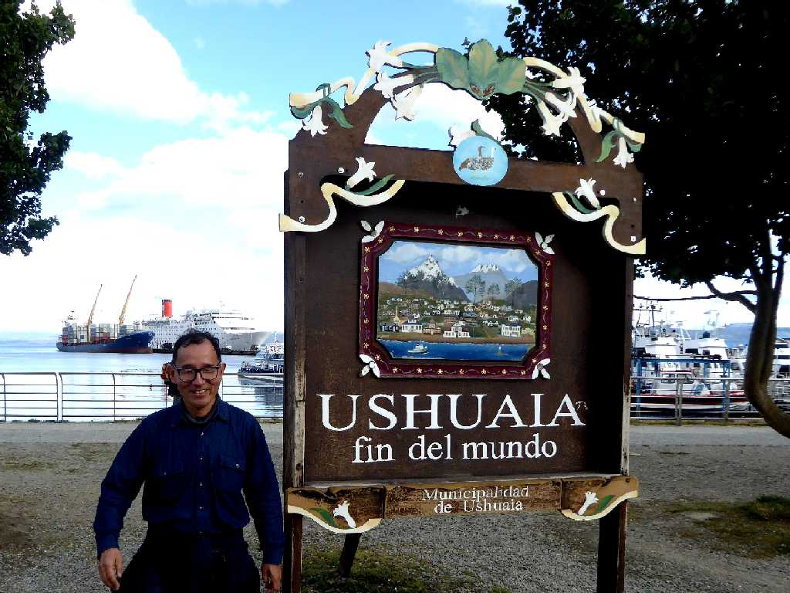

Canal de Beagle Ushuaia
ウシュアイアは南緯５４度４８分に位置する世界最南端の都市で世界の果ての街と云われている
Faro Les Eclairs Canal de Beagle Ushuaia

February 20 2014 Isla Bridges Canal de Beagle

Faro Les Eclairs Canal de Beagle Ushuaia
２年ぶりの再訪問でクルーズ船 Ocean Dream よりウシュアイアの街を背景に灯台と２年前に乗船した観光船を望む

Rainbow Port Ushuaia

February 19 2016 fin del mundo Ushuaia
地球一周の船旅出港６５日目３０,３４３km航行し世界の果てに到着